SDN基本原理与OpenFlow协议分析
实验一 SDN基本原理与OpenFlow协议分析
实验目的
了解软件定义网络控制平面和数据平面相分离的原理。
了解mininet 网络仿真平台以及开源SDN控制器Ryu的基本原理和功能。
掌握使用mininet平台自主构建一个较为复杂的网络拓扑，并建立与Ryu控制器的连接。
掌握使用Wireshark工具抓取OpenFlow协议报文并进行分析。
实验内容
完成Mininet 及Ryu环境配置，了解软件定义网络控制平面和数据平面相分离的具体原理，了解Mininet及Ryu各自的基本原理与功能，以及两者之间连接的原理，了解OpenFlow协议的原理。 建立Mininet 与Ryu的连接并抓包分析OpenFlow协议。自主构建一个相对复杂的网络拓扑，至少包含3个以上的交换机，并针对这个网络进行连接的建立，以及后续的抓包和协议分析。
实验详细步骤
环境配置
前置配置
1 | 配置一下apt镜像 |
基础环境搭建
1 | sudo apt install git |
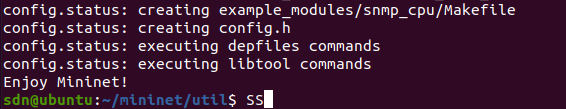
1 | python3 -m pip install --upgrade pip |
环境检查
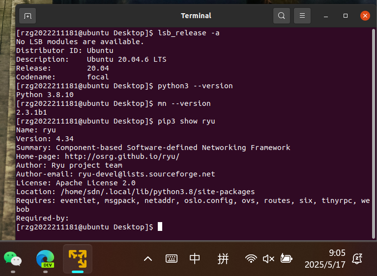
建立Mininet与Ryu连接并抓包分析——基础示例
查看Ryu内置控制器
输入：
1 | find ~ -name "simple_switch.py" 2>/dev/null |
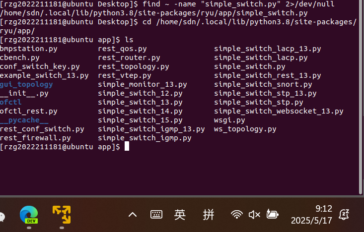
启动Ryu控制器
输入：
1 | ryu-manager simple_switch_13.py |
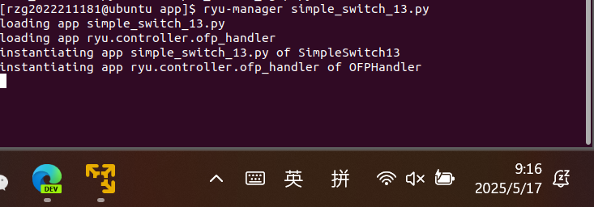
利用Mininet工具构建网络拓扑
拓扑：
1 | graph TD |
输入：
1 | sudo mn --controller=remote,ip=127.0.0.1,port=6633 --switch ovsk,protocols=OpenFlow13 --topo single,2 |
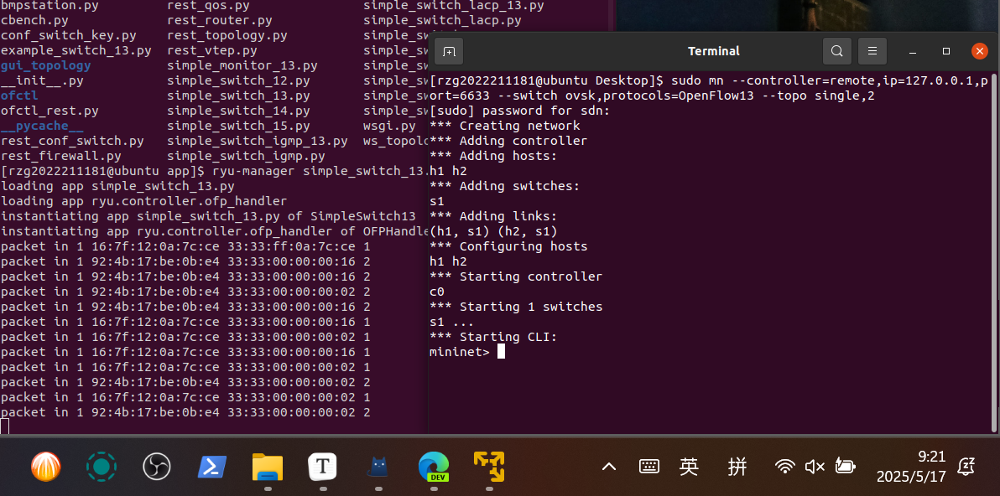
利用抓包工具Wireshark分析OpenFlow协议
输入：
1 | sudo wireshark |
使用any模式抓包，结果如下：
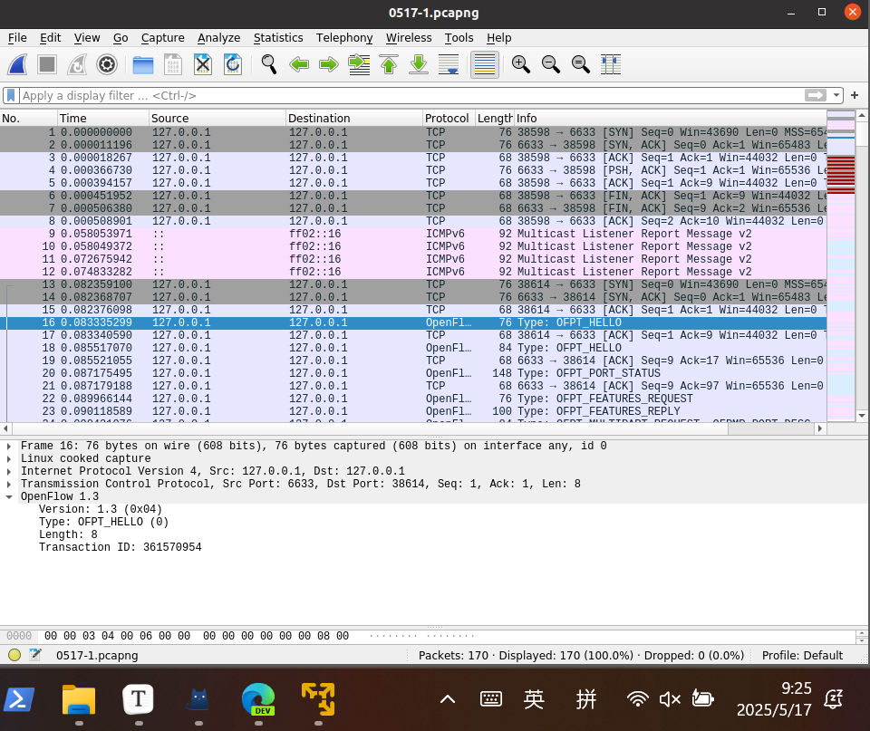
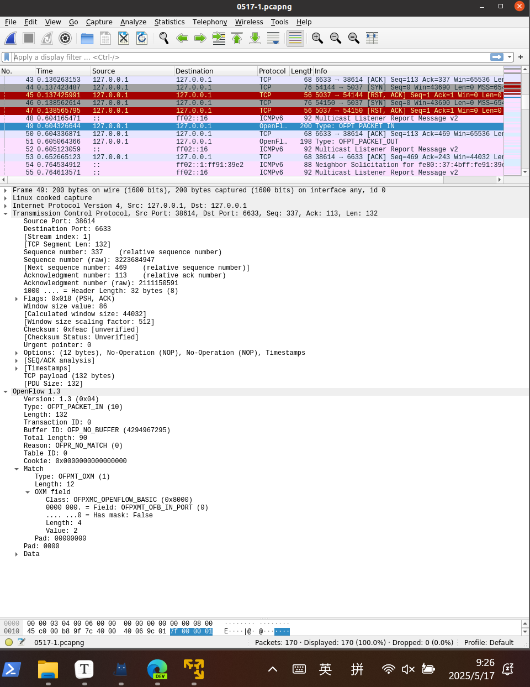
建立Mininet与Ryu连接并抓包分析——复杂拓扑
拓扑图：
1 | graph TD |
编写拓扑python脚本：
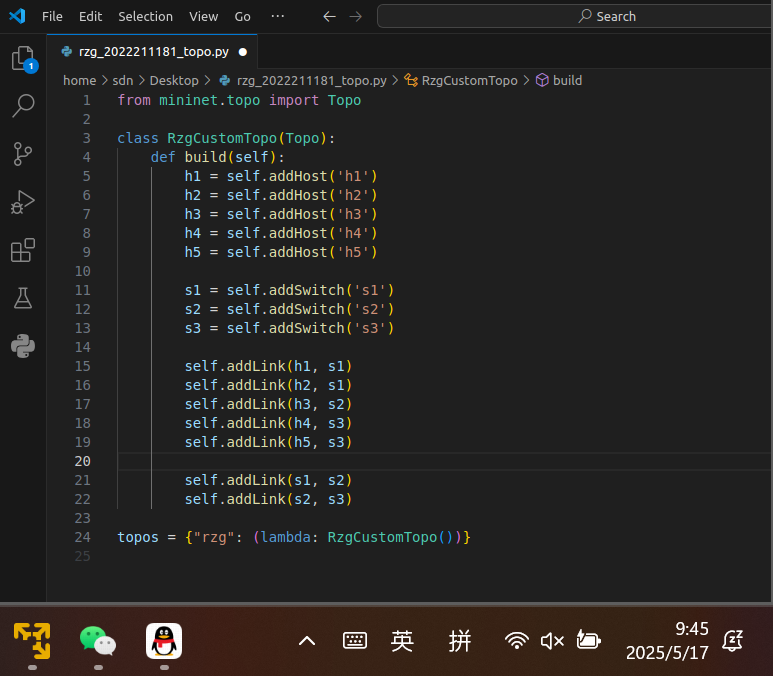
运行控制器：
1 | ryu-manager ryu.app.simple_switch_13 |
在另一个终端运行：
1 | sudo mn --custom ~/Desktop/rzg_2022211181_topo.py --topo rzg --controller=remote,ip=127.0.0.1,port=6633 --switch ovsk,protocols=OpenFlow13 |
检查连通性：
1 | pingall |
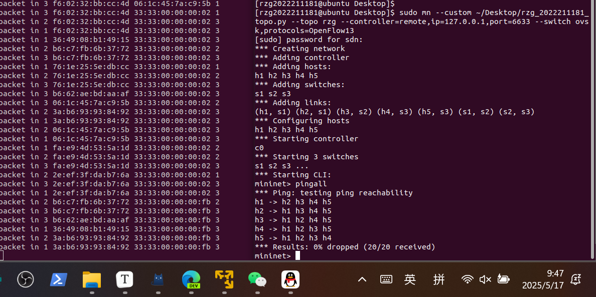
抓包：
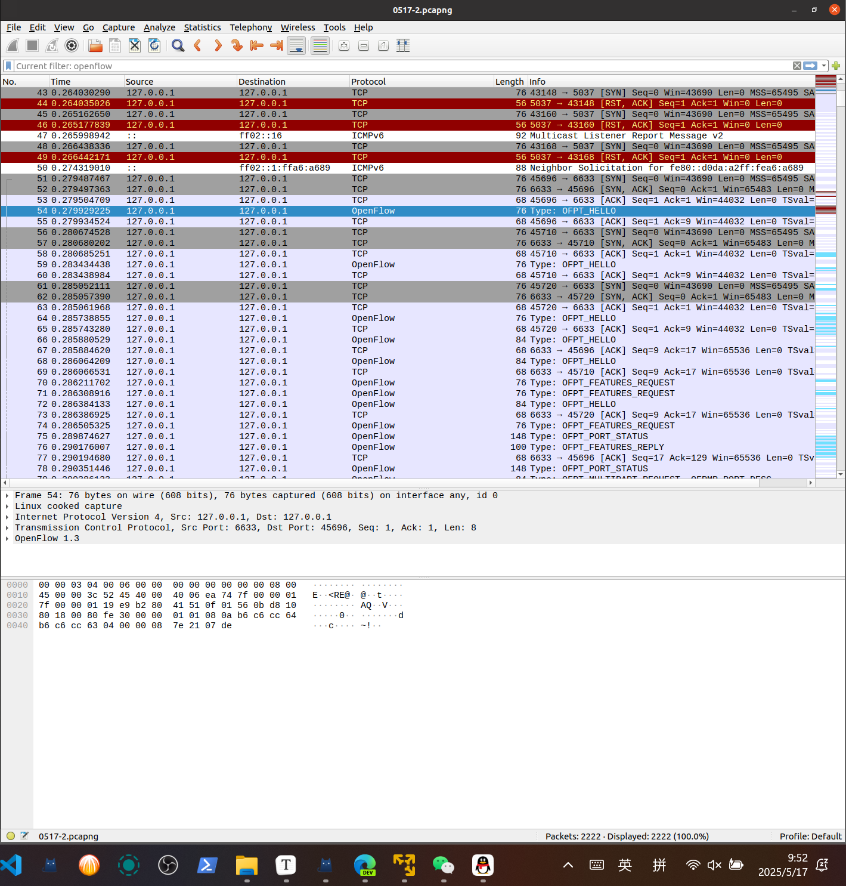
注意：抓包可以使用过滤openflow_v4，抓包如果打不开，使用sudo chown sdn:sdn *.pcapng把root权限的抓包文件权限下放。
抓包分析详见实验分析一节。
实验分析
在分析过程中，由于我们设定了6633是控制器的端口，因此，我们可以在抓包时通过TCP协议的源端口和目的端口来确定该消息是发向控制器，或从控制器接收。
在我们这次抓包中，端口出现了45696、45710、45720和6633，其中6633默认是 Ryu 控制器监听的端口，45696、45710、45720是由 Mininet 中的交换机主动发起连接时分配的临时端口，即交换机（Open vSwitch）客户端端口。
我们通过TCP的源和目的端口确定数据流向。
在抓包时可以通过过滤openflow_v4便于观察。
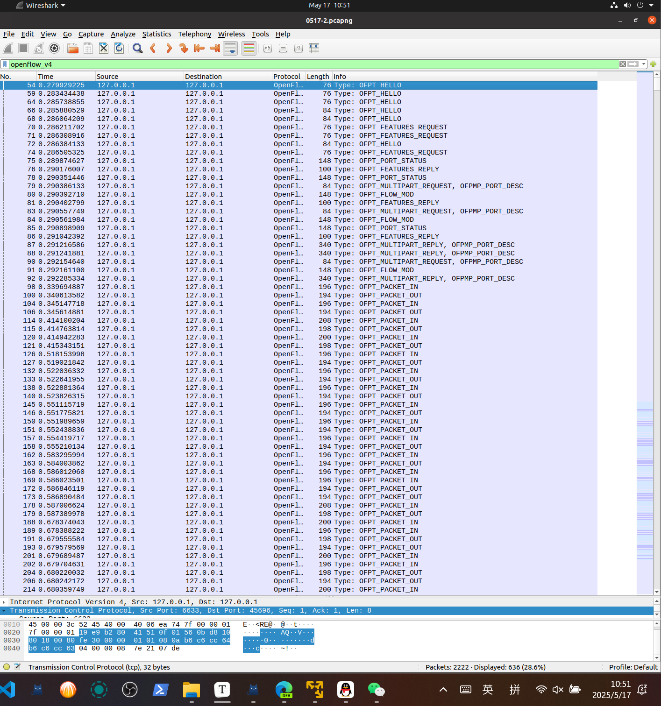
宏观报文协作流程图
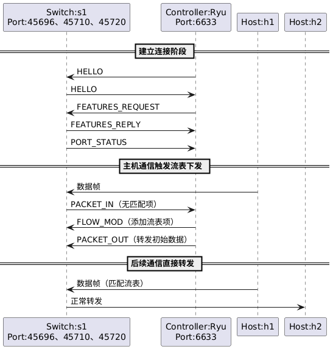
HELLO
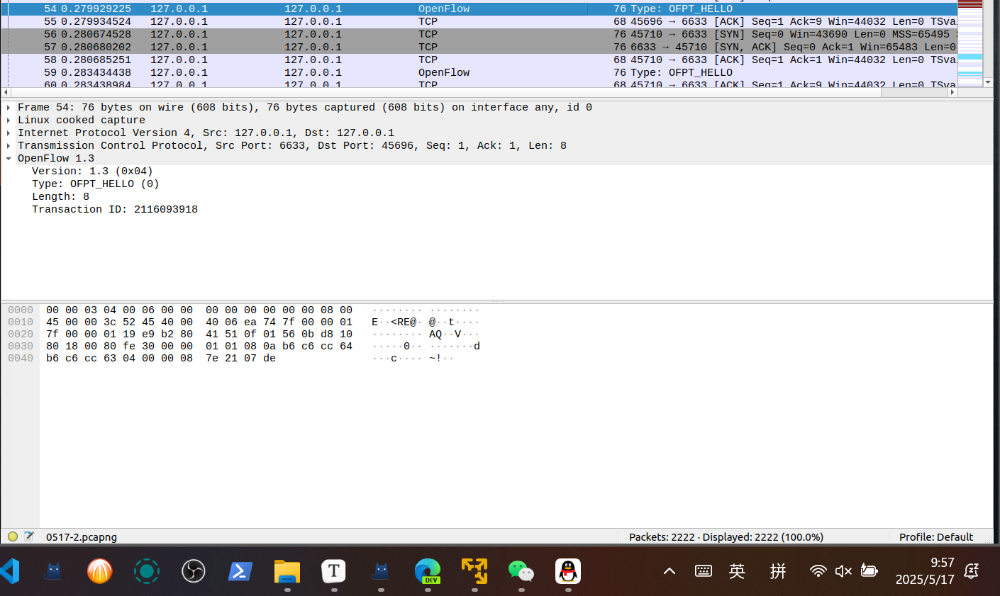
主要功能及作用分析
HELLO 报文是 OpenFlow 协议中的起始消息，用于交换机和控制器之间建立连接时进行协议版本协商。它标志着控制器和交换机之间控制通道的正式建立。HELLO 报文是双向的，控制器和交换机均需要主动发送，双方确认后才能继续后续的功能协商和能力请求。
主要字段分析
Version: 报文中显示为 1.3 (0x04)，表明该连接使用的是 OpenFlow 1.3 协议。
Type: OFPT_HELLO (0)，表示该消息类型为 HELLO。
Length: 报文长度，显示为 8 字节，表示标准的空载 HELLO 报文。
Transaction ID: 此字段为请求和响应配对提供唯一标识符，用于逻辑匹配。该值为 2116093918，是一个随机生成的无符号整数。
报文出现阶段分析
HELLO 报文出现在 OpenFlow 控制通道初始化阶段，通常在控制器刚刚与交换机建立 TCP 连接后立即互相发送。该报文是双方握手的第一步，用于确定后续通信所使用的 OpenFlow 协议版本。如果双方版本不一致，则连接可能被拒绝。Wireshark 中显示的这条报文，是控制器（或交换机）在成功建立 TCP 握手后立即发出的，标志着OpenFlow协议通信正式开始。
PORT_STATUS
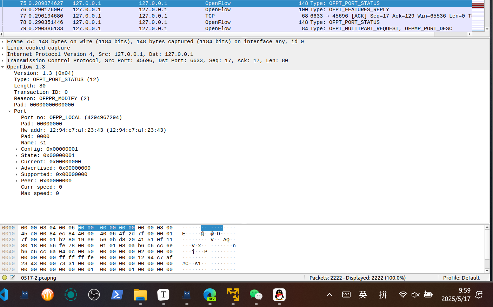
主要功能及作用分析
PORT_STATUS 报文用于通知控制器，交换机端口发生了变更。它的作用是保持控制器对物理网络状态的同步，及时获知端口的新增、删除或修改状态，以便进行路由重计算、流表更新或故障检测。它由交换机主动上报，不依赖控制器请求。
主要字段分析
Version: 1.3 (0x04)，表示使用 OpenFlow 1.3 协议
Type: OFPT_PORT_STATUS (12)，该报文类型编号为12，表示端口状态变更通知
Length: 80，报文长度
Transaction ID: 0，此字段可选，对PORT_STATUS通常不做事务配对
Reason: OFPPR_MODIFY (2)，表示端口状态发生修改
Port: Port no: OFPP_LOCAL（本地端口编号）；Hw addr: 12:94:c7:af:23:43，为本地接口的 MAC 地址；Name: s1，为端口名称；Config、State、Current、Advertised、Supported、Peer：这些字段共同描述了端口的配置、状态和协商能力。
报文出现阶段分析
PORT_STATUS 报文由交换机在端口状态发生变化时主动发出。常见的触发时机包括控制器刚连接后（交换机上报当前端口情况）、端口启用或禁用、链路断开、接口名更改等。它通常紧跟在 FEATURES_REPLY 报文之后出现，也可能在网络运行过程中动态出现，是动态状态感知机制的一部分。此处报文显示为修改类型，说明某个端口参数发生了更新。
FEATURES_REQUEST
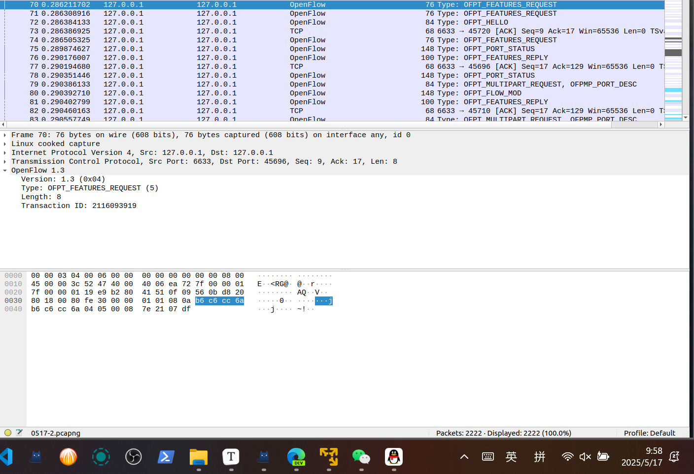
主要功能及作用分析
FEATURES_REQUEST 报文用于控制器主动向交换机询问其基本特征和能力信息。这是控制器获取交换机硬件状态、端口列表、支持能力（如组表、流表数目等）的关键步骤。控制器基于该报文的响应结果决定后续如何进行流表下发和路径控制等行为。
主要字段分析
Version: 1.3 (0x04)，表示使用 OpenFlow 1.3 协议
Type: OFPT_FEATURES_REQUEST (5)，表示该报文为功能请求报文，编号为5
Length: 8，表示该报文为无载荷的标准请求格式，仅包含头部
Transaction ID: 2116093919，为此次请求分配的唯一事务编号，控制器后续通过该 ID 匹配交换机返回的 FEATURES_REPLY 报文
报文出现阶段分析
FEATURES_REQUEST 报文在控制器与交换机完成 HELLO 报文交换后立即发出，属于连接建立流程的第二阶段。控制器通过发送该报文来探测交换机的资源能力，确认其支持的特性，为后续的流表控制与端口管理提供基础信息。它是控制器获取网络拓扑与物理结构的第一步，在建立控制通道初期就会触发。
FEATURES_REPLY
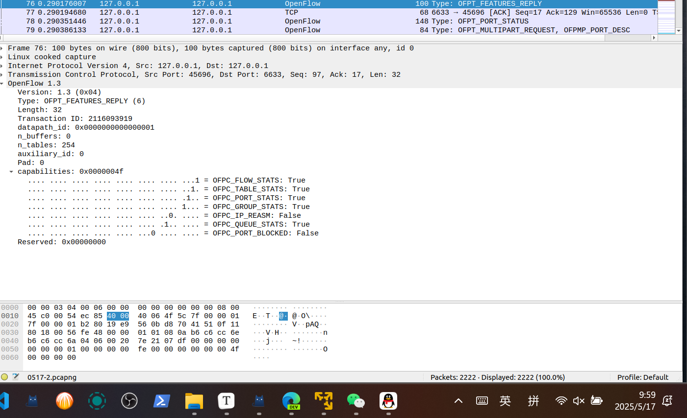
主要功能及作用分析
FEATURES_REPLY 报文是交换机对控制器发送的 FEATURES_REQUEST 报文的响应。其主要作用是向控制器报告交换机的基本硬件能力和配置信息，包括 datapath ID、流表数量、端口缓冲区、支持的能力（如流统计、组表、表统计等），便于控制器根据这些信息作出决策，进行路径控制、策略下发等。
主要字段分析
Version: 1.3 (0x04)，表示使用的是 OpenFlow 1.3 协议版本
Type: OFPT_FEATURES_REPLY (6)，该类型编号为 6，表示功能应答报文
Length: 32，表示该报文长度为 32 字节
Transaction ID: 2116093919，用于对应之前控制器发送的 FEATURES_REQUEST 报文
datapath_id: 0x0000000000000001，交换机的唯一标识符（DPID）
n_buffers: 0，交换机可用的数据包缓存数量
n_tables: 254，交换机支持的流表数量
auxiliary_id: 0，标明这是主连接（不是辅助连接）
capabilities: 0x0000004f，该字段以比特位标识交换机支持的能力
报文出现阶段分析
FEATURES_REPLY 报文出现在控制器与交换机建立连接初期，紧随 HELLO 和 FEATURES_REQUEST 之后。当控制器成功发送 FEATURES_REQUEST 后，交换机会立刻返回 FEATURES_REPLY，汇报自身能力。控制器根据这些信息构建全局拓扑图和流表策略，是控制平面了解数据平面的入口。该报文是双向能力同步的关键步骤之一。
FLOW_MOD
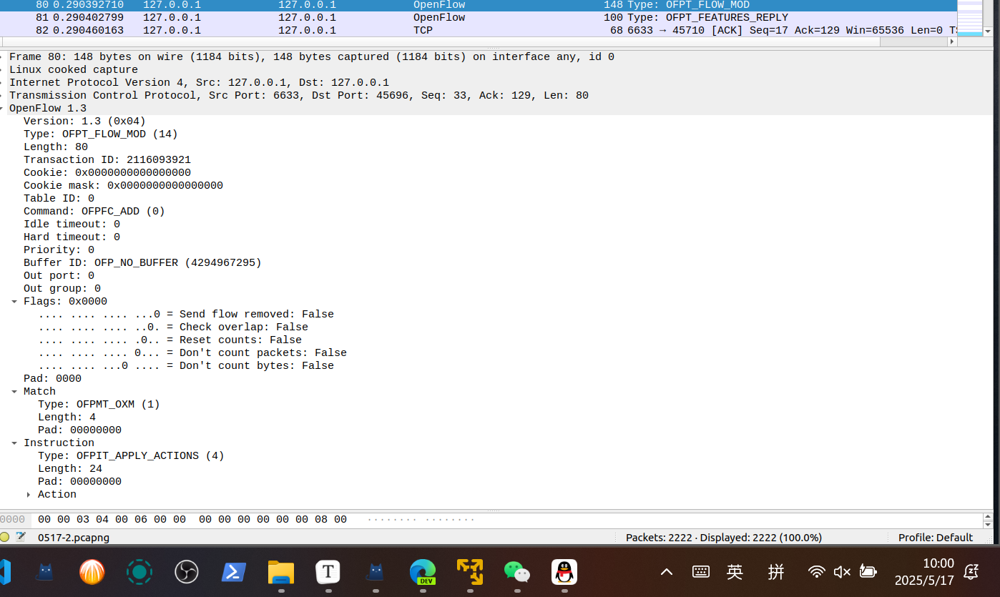
主要功能及作用分析
FLOW_MOD 报文用于控制器向交换机下发流表项，实现对数据平面转发行为的控制。控制器可以通过该报文添加、修改或删除指定规则的流表项，从而控制交换机对匹配数据包的处理行为，是SDN中“控制与转发分离”理念的直接体现。常用于响应 PACKET_IN 报文、部署策略路由等场景。
主要字段分析
Version: 1.3 (0x04)，表示使用 OpenFlow 1.3 协议
Type: OFPT_FLOW_MOD (14)，该类型编号为14，表示流表修改报文
Length: 80，报文长度为 80 字节
Transaction ID: 2116093921，用于与控制器逻辑流程匹配
Cookie / Cookie mask: 用于标识和管理特定流表项（可用于后续删除或统计）
Table ID: 0，表示将规则写入主流表
Command: OFPFC_ADD (0)，表示本次操作为新增一条流表项
Idle timeout / Hard timeout: 0，表示该流表项无超时限制
Priority: 0，该规则优先级
Buffer ID: OFP_NO_BUFFER，表示不缓存任何数据包
Out port / Out group: 0，表示没有目标端口或组设定（由 action 决定）
Flags: 全为 False，表示不额外设置统计或清除行为
Match 部分：
- Type: OFPMT_OXM，OpenFlow扩展匹配字段类型
Instruction 部分：
- Type: OFPIT_APPLY_ACTIONS，应用的动作指令类型
- Action：表示转发动作
报文出现阶段分析
FLOW_MOD 报文通常出现在控制器接收到 PACKET_IN 报文之后，用于向交换机下发具体的流表处理规则。它也可由控制器主动部署策略时直接下发。该报文是整个 OpenFlow 协议中实现转发控制的核心机制，决定了数据包如何被交换机匹配和处理，是 SDN 控制器调度能力的核心体现。在实际网络运行中，会频繁出现。
PACKET_IN
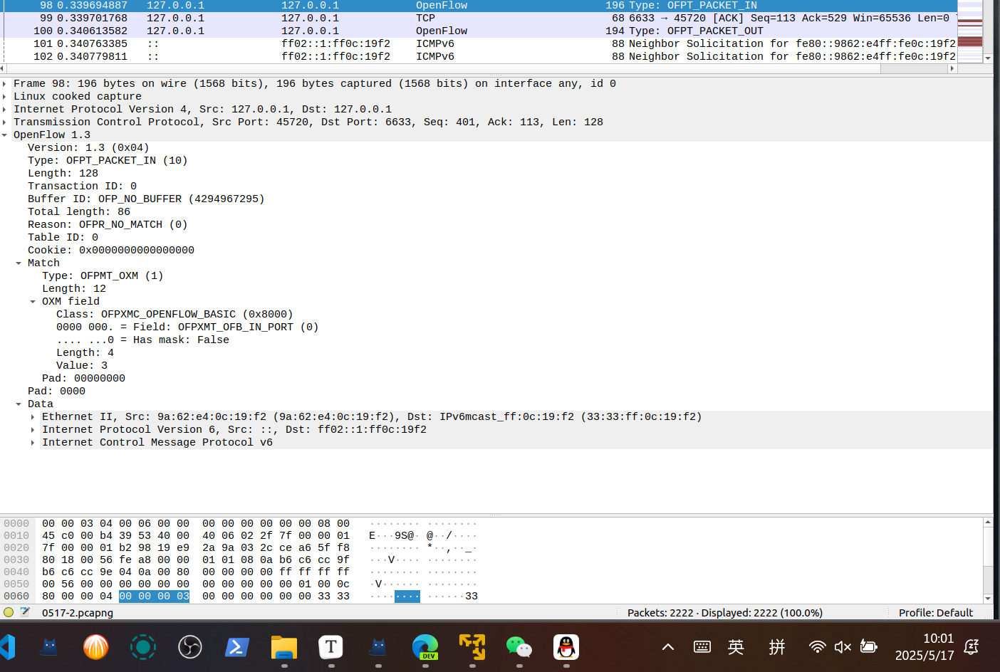
主要功能及作用分析
PACKET_IN 报文用于当交换机接收到一个数据包，但其不匹配当前流表中任何规则时，将该数据包上送给控制器进行处理。此机制是 SDN 中实现“集中控制”的关键之一。控制器接收到 PACKET_IN 后可以决定是否下发新流表（FLOW_MOD）或通过 PACKET_OUT 直接处理该数据包。
主要字段分析
Version: 1.3 (0x04)，OpenFlow 1.3 协议版本
Type: OFPT_PACKET_IN (10)，表示该报文为数据上送类型
Length: 128，报文总长度
Transaction ID: 0，通常此报文为通知型，不依赖事务匹配
Buffer ID: OFP_NO_BUFFER，表示该数据包未缓存在交换机内
Reason: OFPR_NO_MATCH (0)，表示该数据包未匹配任何流表项被转发给控制器
Table ID: 0，指示该数据包是在哪个流表中未命中
Match: 表示触发此 PACKET_IN 的匹配字段
- Type: OFPMT_OXM (1)，使用 OXM 匹配字段格式
- Field: OFPXMT_OFB_IN_PORT (0)，表示匹配入端口为 port 3（即该数据包是从端口3进来的）
Data 部分：
- Ethernet II: 数据包的原始二层帧，包含 src MAC 和 dst MAC
- IPv6: 显示这是一个基于 IPv6 的数据包
- ICMPv6: 显示该数据包为 ICMPv6 协议的邻居请求报文（Neighbor Solicitation）
报文出现阶段分析
PACKET_IN 报文出现在交换机未能找到匹配流表项处理某个入包时。此时，交换机将该包或包头（依据配置）封装为 PACKET_IN 上送给控制器，等待控制器决策。它通常是网络中通信刚启动时，尚未学习 MAC、未建立路径时的首个动作，是控制器下发 FLOW_MOD 的直接前提。在本抓包中，此报文为 ICMPv6 邻居发现请求，由于未匹配流表，因此触发 PACKET_IN。
PACKET_OUT
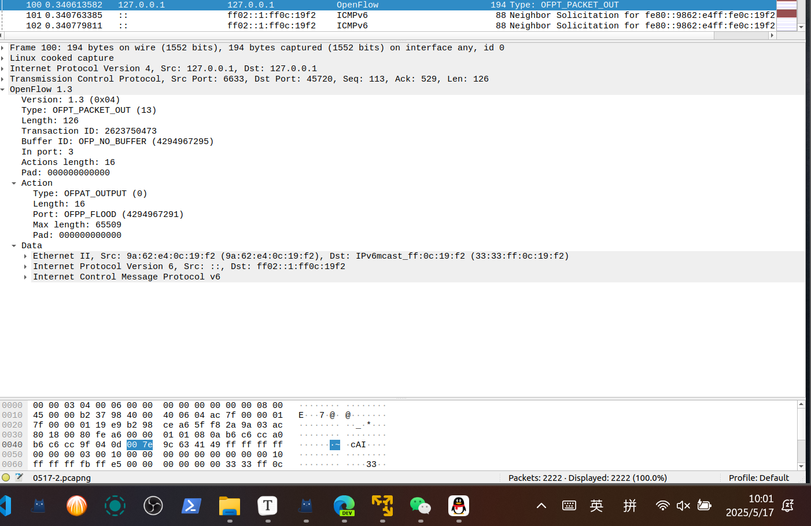
主要功能及作用分析
PACKET_OUT 报文用于控制器将原始数据包从指定端口下发回交换机处理，用于实现立即的数据转发。它通常在控制器收到 PACKET_IN 报文后，决定处理策略时使用。控制器可以通过 PACKET_OUT 指定将数据包发送到某个端口，广播出去，或丢弃等，是 SDN 控制器主动干预转发行为的重要方式。
主要字段分析
Version: 1.3 (0x04)，表示使用 OpenFlow 1.3 协议
Type: OFPT_PACKET_OUT (13)，报文类型编号为 13，表示下发原始数据包
Length: 126，总长度为 126 字节
Transaction ID: 2623750473，为此次下发操作分配的事务编号
Buffer ID: OFP_NO_BUFFER，表示不使用交换机缓存（控制器主动携带数据）
In port: 3，表示该数据包原始来源为端口 3
Actions length: 16，表示动作部分占 16 字节
Action 部分：
Type: OFPAT_OUTPUT (0)，动作类型为输出
Port: OFPP_FLOOD，表示该数据包将以广播方式从所有端口发送（排除 ingress 端口）
Max length: 65509，最大传输长度
Data 部分：
Ethernet II: 源 MAC 为 9a:62:e4:0c:19:f2，目的为 IPv6 组播地址 33:33:ff:0c:19:f2
IPv6: 源 IPv6 为 ::，目标为 ff02::1:ff0c:19f2
ICMPv6: 协议类型为邻居发现（Neighbor Solicitation）
报文出现阶段分析
PACKET_OUT 报文通常出现在交换机上送一个未匹配数据包后，控制器决定如何处理该数据包时。它可以用于转发 ARP 请求、ICMPv6 邻居发现等广播类数据包，也可直接实现控制器主导的转发行为。在本抓包中，该 PACKET_OUT 报文是对 PACKET_IN 中 IPv6 邻居请求的响应，控制器选择将其通过广播的方式发出，实现链路层地址发现。此过程体现了控制器对数据包的直接干预和下发能力。
实验过程中遇到的问题及解决办法
apt下载速度慢
解决方案：配置镜像
1 | sudo cp /etc/apt/sources.list /etc/apt/sources.list.bak |
Ryu安装失败
首先，建立python的软链接
1 | which python |
其次，需要安装pip
1 | sudo apt update |
然后进行eventlet降级
1 | pip uninstall eventlet |
Wireshark抓包文件打不开
使用sudo chown sdn:sdn *.pcapng把root权限的抓包文件权限下放。
Wireshark使用openflow过滤发现没有报文
改为过滤openflow_v4。
实验心得
本次实验通过使用 Wireshark 抓包工具，对 OpenFlow 协议中的关键报文类型进行逐个观察与分析，包括 HELLO、FEATURES_REQUEST、FEATURES_REPLY、PORT_STATUS、FLOW_MOD、PACKET_IN、PACKET_OUT 等。在实验过程中，我深刻理解了控制器与交换机之间的通信机制，以及这些协议报文在 SDN 架构中所扮演的角色。
首先，在观察 HELLO 报文时，我明确了其作为控制通道建立的起点作用。实验中控制器和交换机在 TCP 握手成功后立即互发 HELLO 报文，用于协商 OpenFlow 协议版本，这是整个会话建立的前提。
随后，通过分析 FEATURES_REQUEST 和 FEATURES_REPLY 报文，我了解到控制器通过请求查询交换机的基本能力，而交换机通过应答反馈自身的资源情况，包括支持的流表数量、端口能力、流统计等。这一过程体现了控制器对网络拓扑和状态的感知能力，为后续流表策略下发奠定基础。
PORT_STATUS 报文展示了交换机在端口状态变化时，主动向控制器通告的能力。在抓包中，我观察到交换机在连接建立后会自动上报本地端口信息，这有助于控制器感知链路层的变化，及时调整策略。
在流表控制阶段，通过观察FLOW_MOD 报文，我学会了如何通过控制器下发匹配规则，包括设置匹配字段、优先级、超时时间及动作等内容，从而控制数据包的转发行为。
而当交换机接收到未匹配的报文时，会触发 PACKET_IN 报文将其上送控制器，这是 SDN 控制机制的一个核心体现。
整个实验不仅加深了我对 OpenFlow 报文结构和作用的理解，更让我切实体验了“集中控制、转发分离”的 SDN 网络运行机制。实验中抓包分析的细节操作也锻炼了我的协议解析和网络调试能力。
实验二 OpenFlow流表操作实践
实验目的
了解OpenFlow协议的基本原理及流表结构。
熟悉流表项的增删改查操作及其对数据转发的影响。
通过主机间连通状况验证流表行为。
实验内容
建立Mininet 与Ryu的连接，实现简单的二层交换功能。
通过命令行工具curl进行下发、查看、删除流表操作。
通过Mininet 指令和ryu命令行内容验证流表匹配与数据包处理。
实验详细步骤
启动实验环境
安装 curl。curl 是一个开源命令行工具，通过各类网络协议传输数据，支持 get、post、delete 等 http 方法，本实验中用于进行下发、查看、删除流表。
1 | sudo apt install curl |
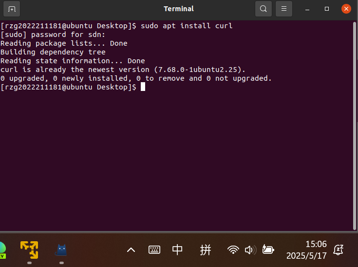
终端1启动Ryu控制器。它加载了两个 Python 模块， ryu.app.simple_switch_13实现一个基于 OpenFlow 1.3 的二层交换机，会自动学习主机的 MAC 地址，并下发对应的流表规则。 ryu.app.ofctl_rest提供 REST API 接口，支持使用 curl 发 HTTP 请求来管理流表。
1 | ryu-manager ryu.app.ofctl_rest ryu.app.simple_switch_13 |
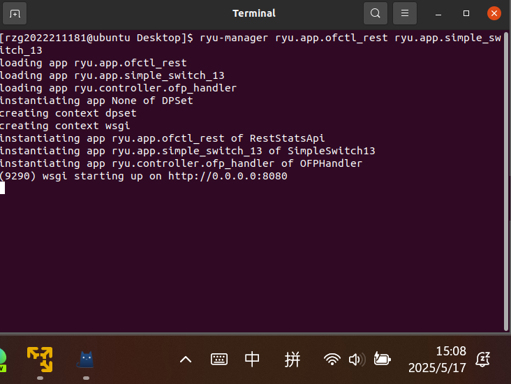
终端2启动Mininet拓扑，创建两层树形拓扑。
1 | sudo mn --controller remote --topo tree,depth=2 |
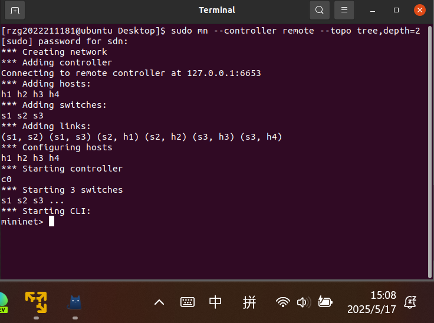
拓扑图如下
1 | graph TD |
使用net查看拓扑
1 | net |
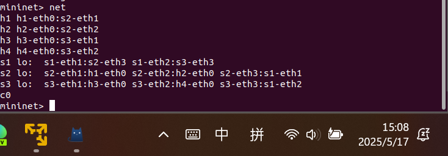
实现二层交换
测试连通。Ryu 的 simple_switch_13 已经实现了二层自学习交换功能，无需额外配置即可连通。
1 | pingall |
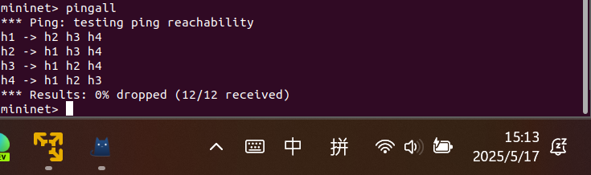
在终端3查看交换机s1流表，已经自动学习MAC地址。
1 | curl http://127.0.0.1:8080/stats/flow/1 |
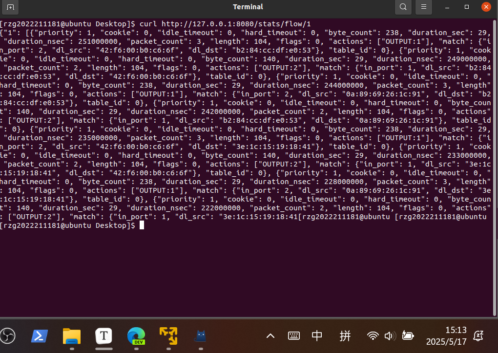
不美观，我们可以用 python3 -m json.tool 让输出加上 pretty print。
1 | curl http://127.0.0.1:8080/stats/flow/1 | python3 -m json.tool |
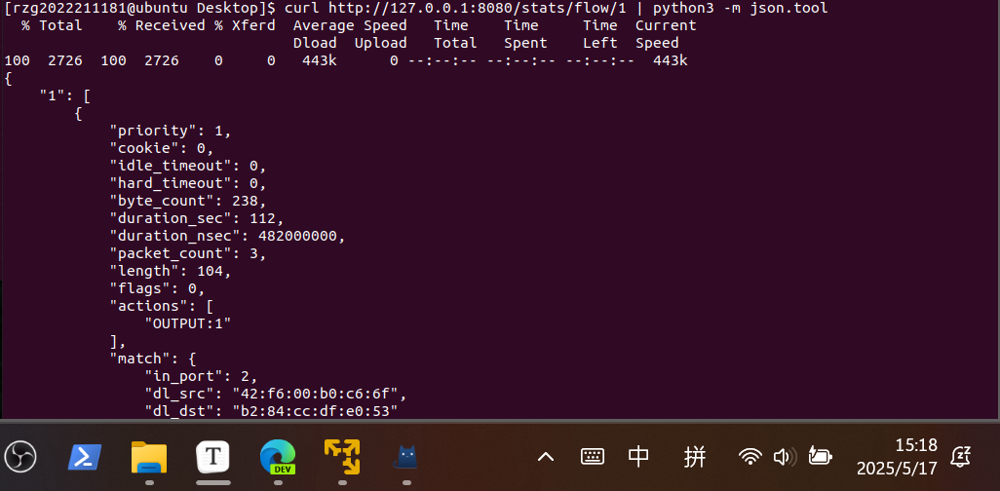
（截图很长，这里不放全部内容了）
另一种查看s1流表的方式
1 | sudo ovs-ofctl -O OpenFlow13 dump-flows s1 |
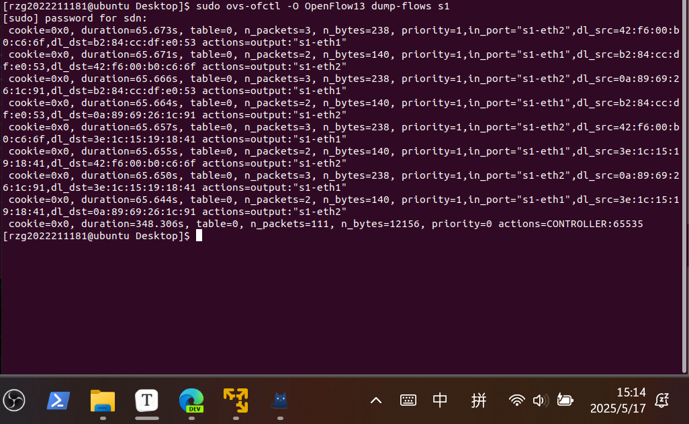
下发流表，流表匹配与数据包处理
删除s1的所有流表
1 | curl -X POST -d '{"dpid":1,"match":{}}' http://127.0.0.1:8080/stats/flowentry/delete |
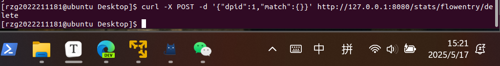
再次查看s1流表发现为空
1 | curl http://127.0.0.1:8080/stats/flow/1 |
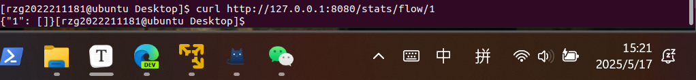
尝试 pingall，仅有h1和h2之间、h3和h4之间能ping通。
1 | pingall |
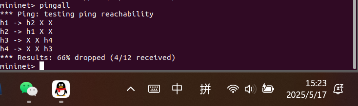
查看h1的mac地址
1 | h1 ifconfig |
查看h3的mac地址
1 | h3 ifconfig |
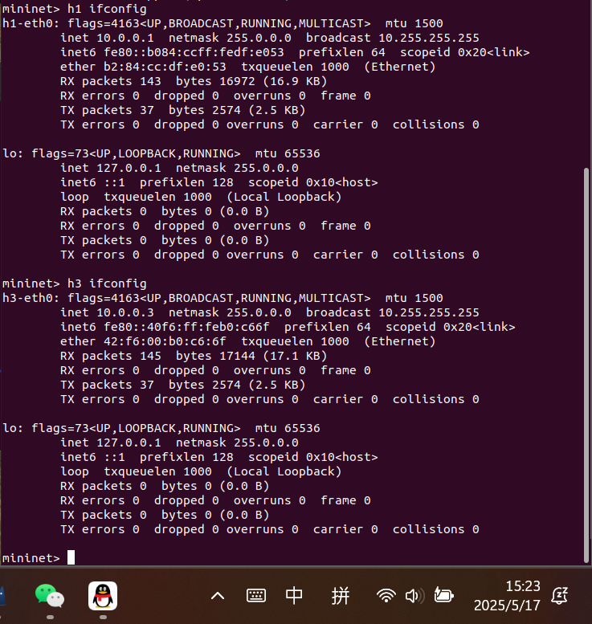
记录一下MAC地址
1 | b2:84:cc:df:e0:53 |
给s1添加一个流表，源地址h1，目标地址h3。
1 | curl -X POST -d '{ |
这个命令的含义是：如果有从端口1进来的数据包，源MAC是 h1（b2:84:cc:df:e0:53），目标MAC是 h3（42:f6:00:b0:c6:6f），就将它转发到端口2。
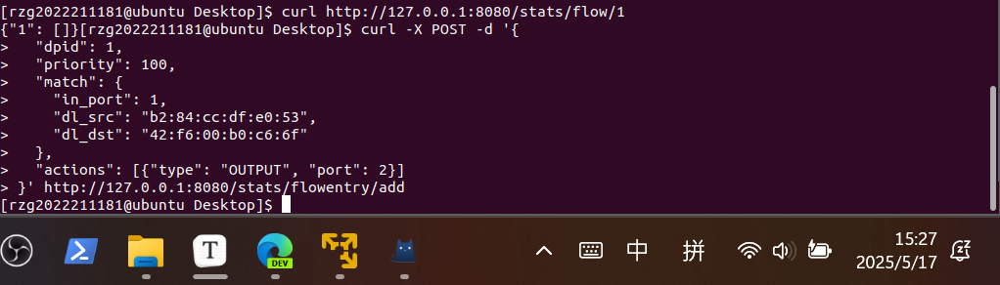
尝试ping，依然无法连通
1 | pingall |
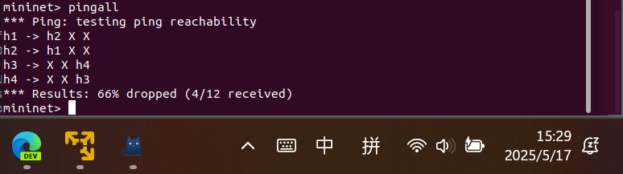
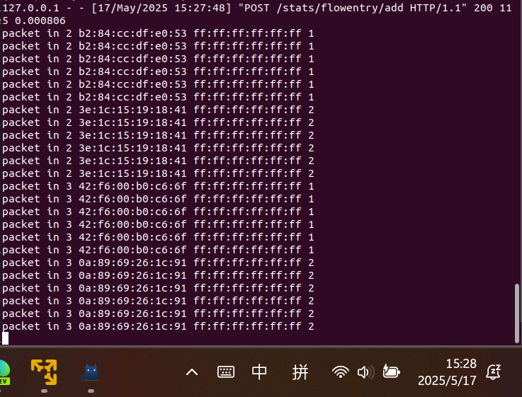
给s1添加一个用于h1广播的流表
1 | curl -X POST -d '{ |
给s1添加一个流表，源地址h3，目标地址h1，这里注意端口号！！！in_port 表示数据包是从交换机的哪一个端口进入的，在 OpenFlow 中，交换机有多个端口（比如 s1-eth1, s1-eth2 等），每个端口都有一个编号（如 1、2、3…），控制器可以设置“只有从特定端口进入的数据包”才匹配这条规则。同时，发出端口也需要配置。
1 | curl -X POST -d '{ |
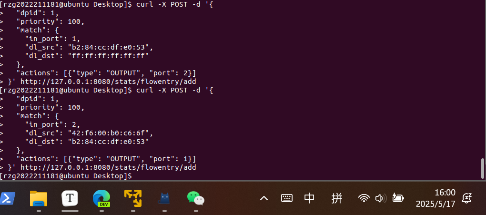
尝试ping，成功连通h1-h3。
1 | pingall |
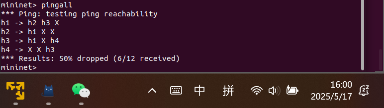
查看s1的流表项，包含我们刚才配置的三项。
1 | sudo ovs-ofctl -O OpenFlow13 dump-flows s1 |
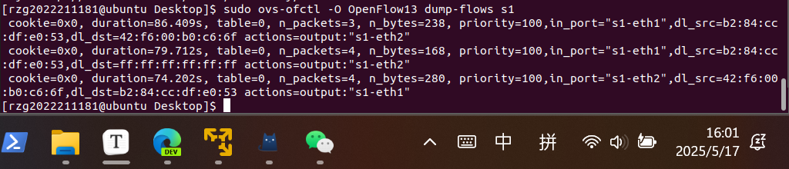
实验分析
思考题1：两种查看流表的方式有什么不同？这些流表表示了什么信息？
使用 REST API（ curl 命令）
curl http://127.0.0.1:8080/stats/flow/1 通过 HTTP 请求向控制器查询流表信息。这种方式展示的数据结构是 JSON。
1 | { |
| 字段名 | 类型 | 含义 |
|---|---|---|
priority |
整数 | 匹配规则的优先级，数值越大优先级越高 |
cookie |
十六进制整数 | 控制器定义的标识符，用于标记该流表规则的用途或来源，可在删除流表时筛选使用 |
idle_timeout |
秒 | 若一段时间未命中此规则（空闲），则自动删除。0 表示永不超时 |
hard_timeout |
秒 | 自规则创建起超过该时间后强制删除。0 表示永不超时 |
byte_count |
字节数 | 统计已匹配的数据总字节数 |
packet_count |
个 | 统计已匹配的数据包总数 |
duration_sec |
秒 | 流表项已存在的时间（秒） |
duration_nsec |
纳秒 | 精确补充 duration_sec，用于统计分析 |
length |
字节数 | 该流表项结构在控制器中的长度（数据结构 size），非必要字段 |
flags |
整数（位图） | 通常为 0，保留位，用于标记如 SEND_FLOW_REM 等特殊操作 |
actions |
列表 | 匹配后执行的动作（如 OUTPUT:2 表示输出到端口 2） |
match |
对象 | 匹配字段列表（如 in_port, dl_src, dl_dst 等） |
table_id |
整数 | 该规则所在的表号（通常为默认 0） |
使用 OVS 命令行（ovs-ofctl）
sudo ovs-ofctl -O OpenFlow13 dump-flows s1 是直接与本地 Open vSwitch 实例交互，输出为文本格式，匹配字段展示有限。
1 | cookie=0x0, duration=86.409s, table=0, n_packets=3, n_bytes=238, priority=100,in_port="s1-eth1",dl_src=b2:84:cc:df:e0:53,dl_dst=42:f6:00:b0:c6:6f actions=output:"s1-eth2" |
| 字段名 | 含义 |
|---|---|
cookie |
控制器可设置的标识符，用于标记这条流表的来源或用途 |
duration |
该流表项自安装后运行的时间（秒） |
table |
所属的表号，一般默认是 table 0 |
n_packets |
命中该规则的数据包总数 |
n_bytes |
命中该规则的所有数据包字节总数 |
priority |
流表的优先级，越大优先匹配 |
in_port |
匹配进入的交换机端口 |
dl_src |
以太网源 MAC 地址 |
dl_dst |
以太网目的 MAC 地址 |
actions |
命中后采取的动作，如 output:"s1-eth2" 表示转发到该端口 |
思考题2：s1流表空的时候，仅有h1和h2之间、h3和h4之间能ping通的原因。
1 | graph TD |
我们只清空了 s1 的流表项，并没有清除 s2 与 s3 上的流表，因此：s2 内部的 h1 与 h2 之间通信不需要经过 s1，仍能依靠原本保留的流表进行转发；同理，h3 与 h4 也都接入 s3，通信不依赖 s1，也能成功。
而 h1 与 h3 之间通信 必须经过 s2 → s1 → s3，而中间经过的 s1 已经没有任何流表项，所以数据包到达 s1 时，找不到匹配规则，触发 PACKET_IN 报文上送控制器。
但由于控制器未安装流表或尚未学习路径，数据包被丢弃。因此 h1 与 h3 之间无法通信。
思考题3：给s1添加一个流表，该流表的源地址为h1，目标地址为h3，此时尝试 ping，应 ping 不通。为什么？
ping 命令依赖 IP 协议层，首次通信前，系统需通过 ARP 解析对方 IP 对应的 MAC 地址，因此第一步发出的实际是一个ARP 请求包：
- 源 MAC：h1 的 MAC
- 目的 MAC：ff:ff:ff:ff:ff:ff（广播）
- 协议类型：ARP
我们安装的那条流表只匹配了dl_dst = h3 的 MAC（单播），但 ARP 请求包的目标地址是 ff:ff:ff:ff:ff:ff（广播），所以该数据包并不会命中安装的流表规则。
没有匹配的流表项 → OVS 将包封装为 PACKET_IN → 发给控制器。
Ryu 控制台打印说明大量 ARP 请求（广播）未被匹配流表。所有这些 packet in 日志都显示 dl_dst = ff:ff:ff:ff:ff:ff，即都是广播包。这些包没有命中任何流表项，被交换机上传到了控制器。
具体的顺序图如下：
1 | sequenceDiagram |
思考题4：为什么仅设置了 h1 广播的流表项，未设置 h3 广播的流表项，h3->h1 仍能ping通？
ping 的前置过程是 ARP，h1 向 h3 发起 ARP 请求时，由于已存在匹配广播地址的流表项，ARP 请求成功到达 h3。
而h3 回应的是单播 ARP Reply，该包到达控制器后，simple_switch_13 控制器学习了 h1 与 h3 的 MAC 地址和端口映射关系，并自动下发了对应的单播流表项。之后的 ping 通信即变为单播，因此即便未为 h3 配置广播流表，通信也能成功。
这表明只要单向广播通路建立，配合控制器的 MAC 学习机制，就可实现完整通信。
实验过程中遇到的问题及解决办法
在下发流表，流表匹配与数据包处理一节中，需要注意，in_port 和 OUTPUT 中的 port 设置也需要按照实际设置，这一点在实验指导书中没有提到，但是如果配置有误会导致实验失败。
我一开始给s1添加源地址h3，目标地址h1的流表时是这样写的：
1 | curl -X POST -d '{ |
这样配置无法ping通。
查阅资料发现是端口设置错误。
使用以下命令查看各交换机端口编号：
1 | sudo ovs-ofctl -O OpenFlow13 show s1 |
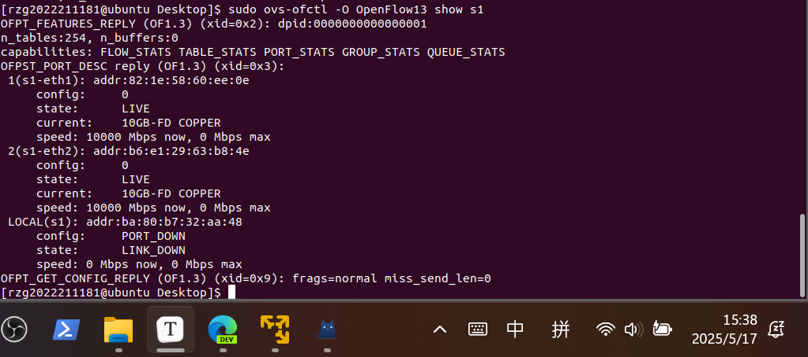
也即
1 | 1(s1-eth1) → 对应 h1/h3 到 s1 的一端 |
修改h3 ➝ h1 的流表
1 | curl -X POST -d '{ |
先使用指令删除原来的
1 | curl -X POST -d '{"dpid":1,"match":{}}' http://127.0.0.1:8080/stats/flowentry/delete |
重新配置后再次ping，h1-h3成功连通
实验心得
通过本次实验，我深入理解并掌握了OpenFlow协议中的流表控制机制，了解了如何借助Ryu控制器对交换机流表进行动态管理。
实验的核心部分是流表操作与数据包处理。在默认的simple_switch_13控制器下，交换机会自动学习主机的MAC地址并下发流表。我通过curl http://127.0.0.1:8080/stats/flow/1以及sudo ovs-ofctl -O OpenFlow13 dump-flows s1等命令分别查看流表状态，逐步熟悉了各个字段（如match字段中的in_port、dl_src、dl_dst，actions字段中的输出端口等）的含义。
在删除流表项后，通过对pingall测试结果的分析，我体会到了流表配置对于网络通信路径的关键作用。尤其是在需要手动配置流表的阶段，我需要精确地写出match匹配条件和对应的actions输出动作。中间曾遇到由于端口号、MAC地址、方向错误导致的通信失败，但通过不断地验证和分析ryu终端的packet in输出，我最终成功实现了从h1到h3的点对点通信。
总体而言，这次实验不仅加深了我对流表机制及OpenFlow协议的理解，更锻炼了我通过抓包、命令分析和逻辑推理来排查问题的能力。